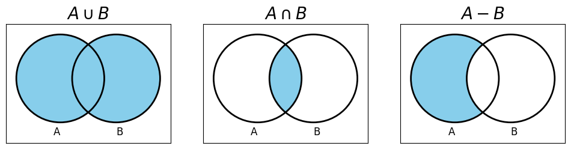

Introduction to basic probability theory#
This chapter covers basic probability theory, with enough understanding for the main chapters of this book.
Overview#
Probability theory is concerned with chance. Whenever there is an event or an activity where the outcome is uncertain, then probabilities are involved. We can think of any activity or event with an uncertain outcome as an experiment whose outcome we observe. Probabilities are then measures of the likelihood of any of the possible outcomes of an event.
An experiment represents an activity whose output is subject to chance (or variation). The output of the experiment is referred to as the outcome of the experiment. The set of all possible outcomes is called the sample space.
Some prerequisite set theory#
To understand probability theory, we first want an understanding of the three main operation in set theory.
Definition — Set
A set is a collection of elements, such as numbers, points in space, shapes, variables, or other sets. A set does not contain duplicate elements.
The set with no elements is a special set called the empty set, denoted \(\emptyset\).
Definition — Set union, intersection, and subtraction
The set union \(A \cup B\) of two sets \(A\) and \(B\) is the set of all elements that are in either set \(A\) or in set \(B\). Formally: \(A \cup B = \{a \mid a \in A \lor a \in B\}\).
The set intersection \(A \cap B\) of two sets \(A\) and \(B\) is the set of all elements that are in both set \(A\) and set \(B\). Formally: \(A \cap B = \{a \mid a \in A \land a \in B\}\).
The set subtraction \(A - B\) of two sets \(A\) and \(B\) is the set of all elements that are in set \(A\) but not in set \(B\). Formally: \(A - B = \{a \mid a \in A \land a \notin B\}\).

Like any set, \(A \cup B\), \(A\cap B\), and \(A - B\) do not contain duplicate elements. If an element \(a\) is in \(A\) and in \(B\), it is represented just once in \(A \cup B\), in \(A \cap B\), and in \(A - B\).
Sample spaces and outcomes#
Definition – Sample space and outcomes
The sample space \(\Omega\) is the set of all possible outcomes that might be observed for an experiment.
A set of outcomes \(A \subseteq \Omega\) is called an event. An event is said to have occurred if any one of its elements is the outcome observed in an experiment.
Examples
An experiment involving the flipping of a coin has two possible outcomes: heads or tails. The sample space is thus \(S = \{heads, tails\}\).
An experiment involving testing a software system and counting the number of failures experienced after T = 1 hour has many possible outcomes: we may experience no failures, 1 failure, 2 failures, 3 failures, …. The sample space is \(S = \{0, ~1, ~2, ~3, \ldots\}\) (the set of positive integers).
An experiment involving connecting to a web server may have several outcomes, such as successfully connecting, receiving a 404 error, etc. The sample space is the set of possible return values from the web sever.
Definition – Independence
Two events are said to be independent if the occurrence of one event does not depend on the other and vice versa. For example, if we have two dice, the probability of one falling on the outcome \(6\) is independent of the outcome of the other dice. However, if we throw both dice, but one falls on the floor out of sight, while the other shows a \(3\), then the probability of the sum of the two dice equaling \(7\) is dependent on the probability of the second dice.
Probability#
Probabilities are usually assigned to events.
Definition – Probability
The probability \(P(A)\) of an event \(A \subseteq \Omega\) is a non-negative real number that relates to the number of times we observe an outcome in \(A\). This can be defined as the fraction of times that we observe an outcome in \(A\) over the total number of possible outcomes:
where \(m\) is the number of outcomes in \(A\) and \(n\) is the total number of possible outcomes, that is, the number of elements in \(S\).
We say that \(P(A)\) is the probability measure, and this measures how likely it is that the actual outcome of the experiment will be a member of the set \(A\).
The three axioms of probability theory
Probabilities must satisfy certain axioms to be meaningful measures of likelihood. The following probability laws hold for any event \(A\) and any state space \(\Omega\):
\(0\leq P(A) \leq 1\);
\(P(\Omega) = 1\); and
\(P(A \cup B) = P(A) + P(B)\) for disjoint events \(A\) and \(B\) (that is, \(A \cap B = \emptyset\)).
That is: (1) the probability of an event occurring is between \(0\) and \(1\) inclusive; (2) the probability of the event being part of the sample space is 1, so no events outside the sample space are possible; and (3) the probability of the event \(A \cup B\) is the sum of the probabilities of \(A\) and of \(B\), assuming that \(A\) and \(B\) are disjoint.
There are some important consequences of these three axioms:
\(P(A) = 1 - P(\Omega - A)\).
\(P(\emptyset) = 0\), where \(\emptyset\) is the empty set.
If \(A \subseteq B\) then \(P(A) \leq P(B)\).
\(P(A \cup B) = P(A) + P(B) - P(A \cap B)\), even if \(A\) and \(B\) are not disjoint.
Definition – Conditional probability
Given two events \(A\) and \(B\), if \(P(B) > 0\) then the conditional probability of \(A\) given \(B\) is defined as:
This says that the probability of \(A\) occurring, given that we have observed \(B\), is the probability of observing both \(A\) and \(B\), divided by the probability of observing event \(B\).
Conditional probability provides us with the tools to reason about partial information, so that we can estimate the probability of an event \(A\) that depends on the outcome of event \(B\),, event if we do not know the outcome of event \(B\) yet.
We say that \(P(A)\) is the prior probability of \(A\) and that \(P(A \mid B)\) is the posterior probability of \(A\) given \(B\).
Definition – The Product rule
Given two events \(A\) and \(B\), if \(P(B) > 0\) then the probability of both events \(A\) and \(B\) occurring is defined by the product rule:
The product rule can be useful, however, it is defined in terms of conditional probability, which itself uses the product rule. We can resolve this using Bayes’ theorem.
Definition – Bayes’ theorem
Given two events \(A\) and \(B\), the conditional probability of \(A\) given \(B\) can be calculated using:
Bayes’ theorem allows us to translate causal knowledge about events into diagnostic knowledge. For example, if event \(A\) represents a particular disease in a plant, and event \(B\) is the event describing a positive outcome of a test that can diagnose that disease, then \(P(B \mid A)\) defines the causal relationship: if the plant has disease \(A\), then the probability of observing a positive diagnosis from test \(B\) is \(P(B \mid A)\). Once we have the test result, we can determine the probability of \(A\) (the plant having the disease) provided we can estimate the prior probabilities \(P(A)\) and \(P(B)\).
Bayes’ theorem is named after Thomas Bayes, the English statistician and philosopher who first defined it.